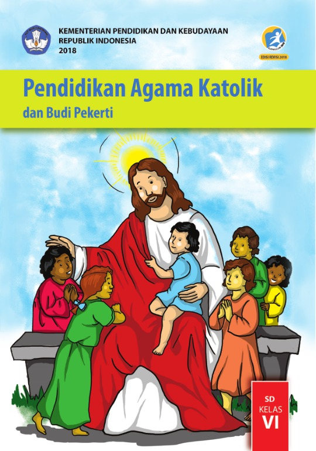

|
Dalam pelajaran agama saya belajar tentang Saya belajar tentang kebangkitan Yesus dan kenaikan-Nya ke surga. Kebangkitan Yesus menunjukkan kemenangan-Nya atas dosa dan kematian, menjadi dasar iman Kristiani bahwa hidup tidak berakhir di kematian, melainkan ada kehidupan kekal. Kenaikan Yesus menegaskan bahwa Ia kembali kepada Bapa untuk mempersiapkan tempat bagi umat-Nya dan mengutus Roh Kudus agar senantiasa menyertai kita dalam menjalani hidup sebagai saksi kasih dan kebenaran-Nya. |
